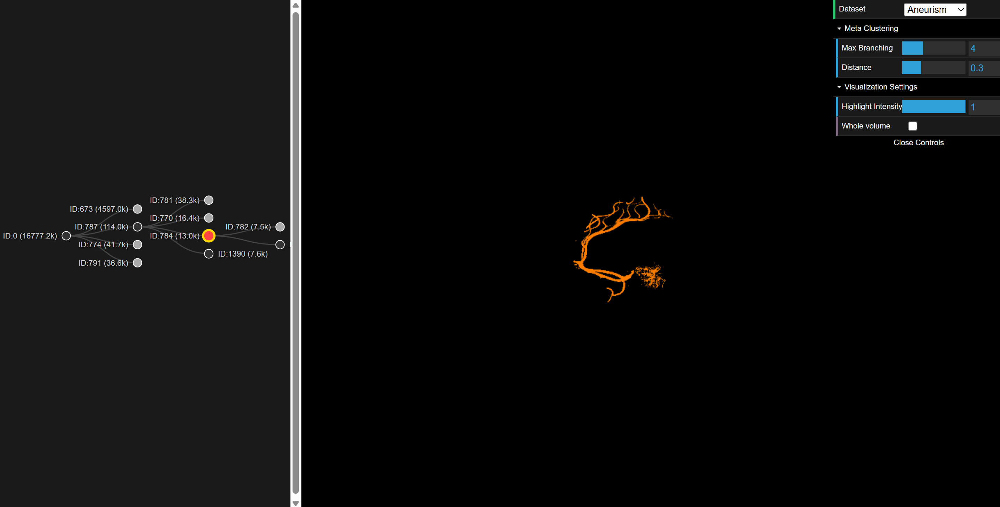

Interactive Volume Exploration using Exhaustive Clustering of Super-Voxels
Course: Visualization 2 • TU Wien • 2025
The goal of this project was to implement the FeatureLego framework (Jadhav et al., 2019) using modern WebGPU and D3.js FeatureLego is a volume exploration approach that partitions a volumetric dataset into semantic regions ("Legos") that users can interactively select and group. This implementation leverages WebGPU for high-performance volume rendering and clustering, and D3.js for the interactive meta-cluster tree visualization.

The core idea is to allow users to select "features" directly. The pipeline consists of four major stages, all implemented in JavaScript and WGSL:
The volume is over-segmented into compact, perceptually homogeneous super-voxels using SLIC (Simple Linear Iterative Clustering) adapted for 3D. This reduces the complexity of the dataset from millions of voxels to a few thousand super-voxels (graph nodes).
We use the Felzenszwalb-Huttenlocher (FH) graph-based clustering algorithm. Instead of guessing a single parameter k, the system runs an "exhaustive" parameter scan (sampling logarithmic steps of k). Stable regions that persist across multiple scales are identified and stored as candidate features.
To organize the hundreds of overlapping regions generated by the exhaustive step, we build a Meta-Cluster Tree.
The system features two linked views:
The application runs directly in a WebGPU-compatible browser (Chrome/Edge/Firefox Nightly).
| Action | Result |
|---|---|
| Left Mouse Drag | Rotate the volume in 3D space. |
| Click (Tree Node) | Select a region/meta-cluster. The 3D view updates to highlight this region. |
| Key '1' | Toggle/Cycle highlight intensity (mix factor between original volume and region mask). |
| Spacebar | Toggle "Show Only Highlight" (renders non-selected voxels as transparent). |
A dat.GUI panel allows real-time adjustment of the clustering pipeline:
The project supports standard 8-bit raw volumetric datasets. The following datasets from the TC18 3D Images Repository are supported: